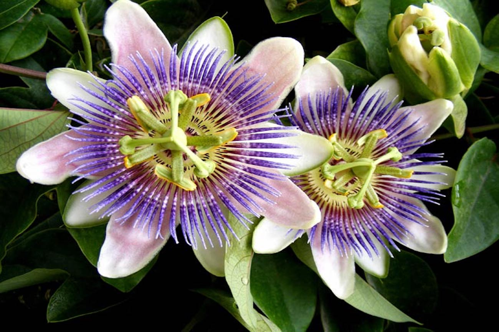
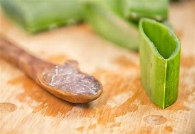
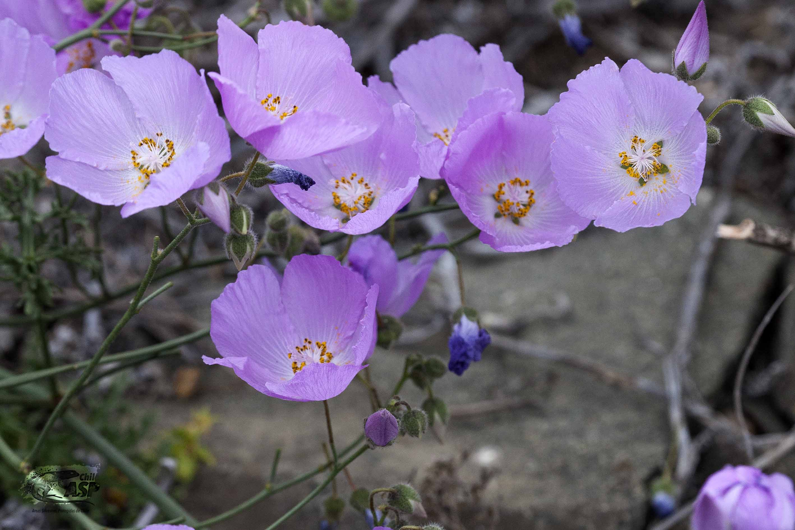
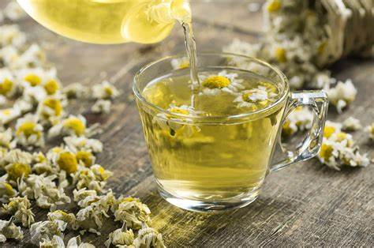
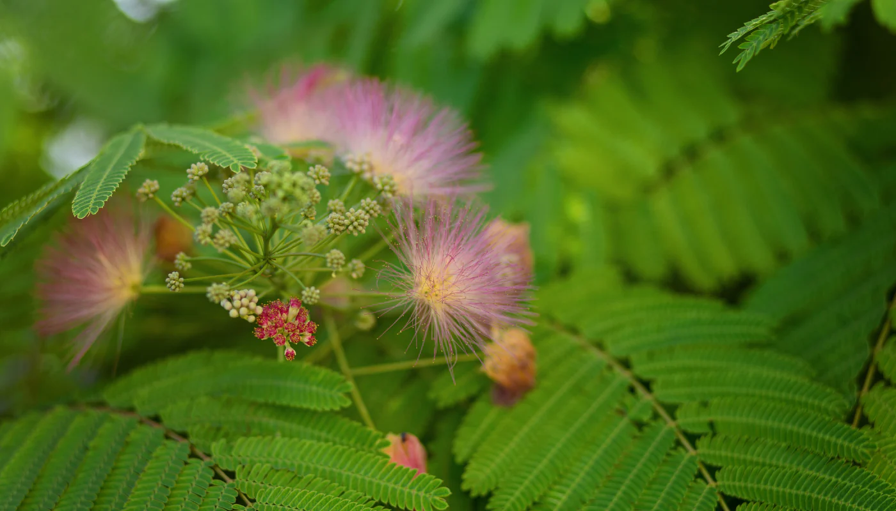

"𝘋𝘦𝘴𝘤𝘶𝘣𝘳𝘦 𝘦𝘭 𝘱𝘰𝘥𝘦𝘳 𝘤𝘶𝘳𝘢𝘵𝘪𝘷𝘰 𝘥𝘦 𝘯𝘶𝘦𝘴𝘵𝘳𝘢𝘴 𝘱𝘭𝘢𝘯𝘵𝘢𝘴 𝘮𝘦𝘥𝘪𝘤𝘪𝘯𝘢𝘭𝘦𝘴, 𝘶𝘵𝘪𝘭𝘪𝘻𝘢𝘥𝘢𝘴 𝘥𝘶𝘳𝘢𝘯𝘵𝘦 𝘴𝘪𝘨𝘭𝘰𝘴 𝘱𝘢𝘳𝘢 𝘮𝘦𝘫𝘰𝘳𝘢𝘳 𝘭𝘢 𝘴𝘢𝘭𝘶𝘥 𝘺 𝘦𝘭 𝘣𝘪𝘦𝘯𝘦𝘴𝘵𝘢𝘳. 𝘋𝘦𝘴𝘥𝘦 𝘭𝘢 𝘮𝘦𝘯𝘵𝘢 𝘳𝘦𝘧𝘳𝘦𝘴𝘤𝘢𝘯𝘵𝘦 𝘩𝘢𝘴𝘵𝘢 𝘭𝘢 𝘷𝘢𝘭𝘦𝘳𝘪𝘢𝘯𝘢 𝘳𝘦𝘭𝘢𝘫𝘢𝘯𝘵𝘦, 𝘤𝘢𝘥𝘢 𝘶𝘯𝘢 𝘦𝘴 𝘶𝘯𝘢 𝘩𝘦𝘳𝘳𝘢𝘮𝘪𝘦𝘯𝘵𝘢 𝘯𝘢𝘵𝘶𝘳𝘢𝘭 𝘱𝘢𝘳𝘢 𝘵𝘶 𝘴𝘢𝘭𝘶𝘥."
Plasifora
La pasiflora es una planta medicinal que es utilizada comúnmente para tratar algunos síntomas de menopausia,
hipertensión arterial y déficit de atención. Dicha planta se puede consumir en forma de té, tintura o suplemento
fisioterapéutico, ya que es recetada para calmar el nerviosismo, la ansiedad y el insomnio, puesto que posee propiedades
que actúan sobre el sistema nervioso central. Tiene distintos nombres según la región en la que se consuma pero su nombre
científico es Passiflora incarnata L.

Sabila
La sábila esun arbusto que se caracteriza por su ligero parecido a los magueyes, con largas, gruesas y espinosas
hojas color verde. Los registros históricos muestran que los antiguos chinos y egipcios utilizaban la sábila para tratar
quemaduras, heridas y para bajar la fiebre. Hoy en día, aparte de usarse para tratar diversos malestares, también se
utiliza en cosmetología.

Malvilla
La flor de la Malva, una planta con reconocidas propiedades curativas,
desde hace mucho tiempo es sabido que sus hojas y flores incluyen sustancias que la hacen muy beneficiosa para la salud,
tanto para la defensa del organismo como para tratamientos cosméticos. Es por eso por lo que se usa frecuentemente con fines
medicinales y estéticos, en forma de diferentes productos como cremas, jabones, aceite corporal natural o muchos otros de gran
variedad.

Manzanilla
La manzanilla es una planta de flores blancas con amarillo y considerada como una de las plantas medicinales
más populares en México. Es un buen calmante , descongestiona las vías respiratorias, es auxiliar en enfermedades como
gripa y catarro, desinflama los intestinos y ayuda en trastornos digestivos, afecciones de las vías urinarias y en dolores
menstruales. De forma externa es usada como antiinflamatorio, para ayudar a la cicatrización de la piel y para otros fines antisépticos.

Tepezcohuite
El tepezcohuite se indica para resolver problemas de la piel, para aliviar granos y heridas.
curar las quemaduras, aliviar la comezón vaginal se hacen lavados externos con la decocción de la corteza de esta planta
